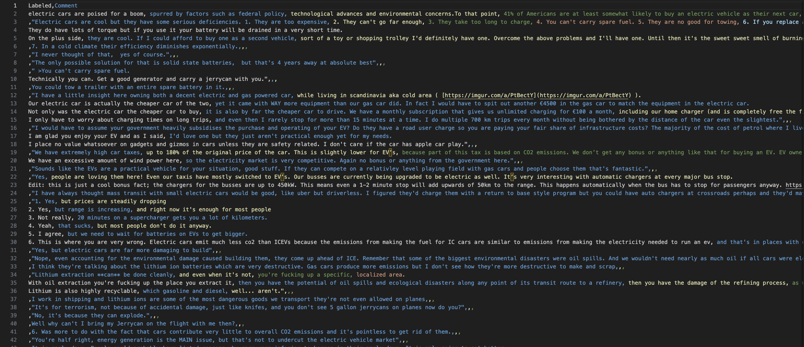
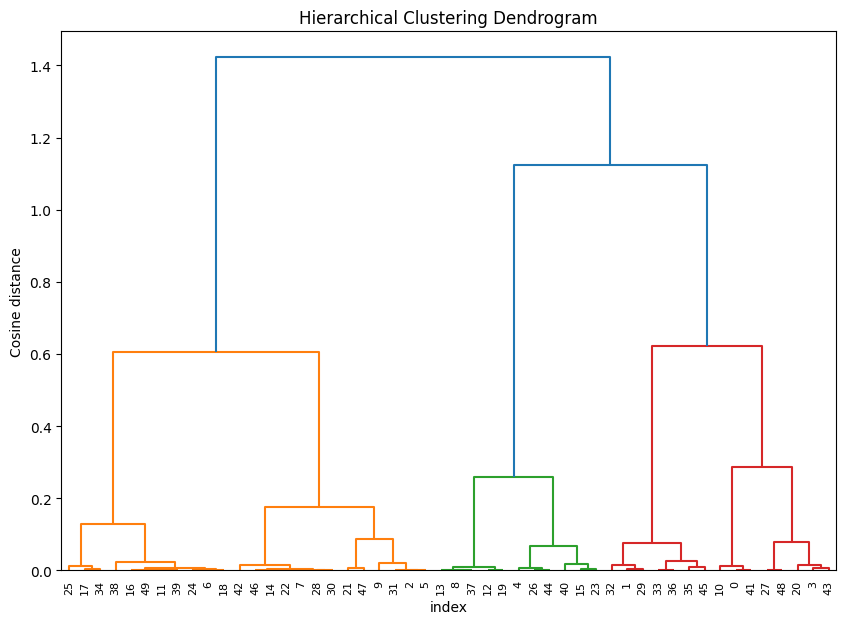
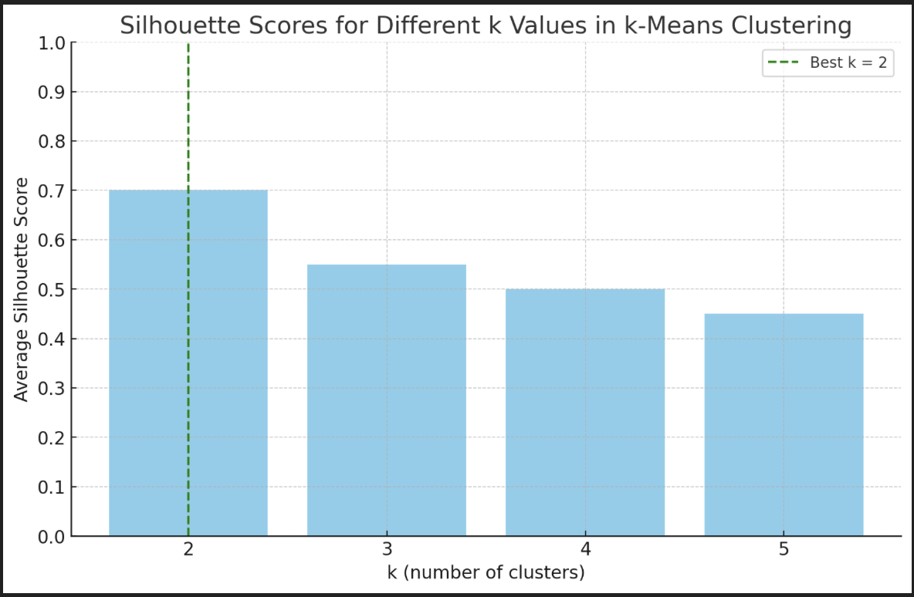

Overview
Clustering is a powerful unsupervised learning technique used to group similar data points together based on their features, without prior knowledge of the group labels. The goal is to ensure that data points in the same cluster are more similar to each other than to those in other clusters. In the context of text mining, clustering can be particularly useful for discovering underlying patterns, themes, or topics in a collection of text data. Here’s how and why you might use clustering on your data:
How to Use Clustering on Text Data
- Preprocessing: Convert the text data into a suitable numerical format for clustering. This involves cleaning the text, tokenization, removing stop words, and possibly using techniques like TF-IDF (Term Frequency-Inverse Document Frequency) or word embeddings (e.g., Word2Vec) to represent text as vectors.
- Feature Selection: Choose or derive features from the text that are meaningful for the clustering task. For instance, word or document vectors that capture semantic information could be used as features.
- Choosing a Clustering Algorithm: Select an appropriate clustering algorithm based on the nature of your data and the goal of your analysis. Common choices for text data include K-Means, Hierarchical clustering, and DBSCAN.
- Determining the Number of Clusters: For algorithms like K-Means, decide on the number of clusters either through domain knowledge or by using methods like the elbow method or silhouette analysis.
- Clustering: Apply the clustering algorithm to your data, ensuring to tune any hyperparameters as necessary.
- Evaluation and Interpretation: Assess the quality of the clusters using metrics (if labels are available) or by qualitatively reviewing the contents of each cluster. Interpret what each cluster represents in terms of the underlying text data.
Why Use Clustering
- Discovering Themes or Topics: In a large corpus of text data, clustering can help identify dominant themes or topics without reading through every document.
- Organizing Information: Clustering can be used to automatically organize articles, research papers, or customer feedback into coherent groups for easier navigation and analysis.
- Anomaly Detection: By examining small or outlier clusters, you can identify unusual documents or trends that might warrant further investigation.
- Customer Segmentation: In marketing, clustering customer feedback or reviews can reveal distinct customer segments with specific preferences or concerns.
Expected Findings
- Thematic Groupings: Clusters that represent major themes or subjects present in the data, which can be especially useful for exploratory data analysis or guiding further research.
- Gaps or Niche Areas: Identification of less common topics or areas that have not been extensively covered, which could represent opportunities for new research or product development.
- Sentiment or Opinion Clusters: In datasets like customer reviews, clustering might reveal groups of positive, negative, or neutral sentiment, which can inform product improvement or customer service strategies.
Ultimately, the specific findings will depend on the nature of your text data and the objectives of your clustering analysis. By applying clustering thoughtfully, you can uncover valuable insights that might not be immediately apparent through manual examination alone.
Data Prep
Clustering is a type of unsupervised learning algorithm that groups data points into several clusters, where objects in the same cluster are more similar to each other than to those in other clusters. The basic premise of clustering is to find patterns or groups within the data without the need for labels, making it particularly useful for exploring data structure or segmenting data into distinct groups based on inherent similarities.
For clustering algorithms, such as K-means, DBSCAN, or hierarchical clustering, the data typically needs to be in a specific format:
- Unlabeled: Unlike supervised learning, clustering does not use output labels for training. The algorithm attempts to group data based on patterns without any predefined labels.
- Numeric: Clustering algorithms usually require numerical data. This is because they often calculate distances or similarities between data points. Categorical data can sometimes be used if it is converted into a numerical format through methods like one-hot encoding.
- Scaled: Many clustering algorithms also benefit from scaling the data so that all features contribute equally to the distance calculations. This prevents features with larger ranges from dominating the distance calculations.
However, it is not limited to just numeric data. Clustering can also be applied to categorical data, though the methods and algorithms used may differ from those applied to numeric data. For example, k-means clustering is a common algorithm used for numeric data, while k-modes is used for categorical data.
The data used for clustering should be structured in a way that the clustering algorithm can interpret. For numerical data, this typically means a table where each row represents an individual data point and each column represents a feature or variable of that data point. If the data includes categorical data, it might require encoding into a numeric format before it can be used in certain clustering algorithms.
To use this for clustering, one would need to convert the qualitative, unstructured text data into a structured, often numeric format. This process is known as feature extraction or vectorization, where text data is transformed into a format that algorithms can work with, such as word counts or TF-IDF scores for each word or phrase.

Results
Dendrogram Interpretation
- Vertical Lines: These represent clusters that are being joined together. The height of the join (y-axis) represents the distance between clusters.
- Horizontal Lines: These represent the clusters being connected. The length of the horizontal line does not have a direct meaning; it's just there to connect the vertical lines.
- Y-axis (Cosine distance): The dendrogram uses a distance metric (cosine distance in this case) to measure how similar or dissimilar data points are. A smaller cosine distance indicates more similarity.
- Color Coding: Often, dendrograms use color to represent the linkage distance at which cluster joins occur. In your dendrogram, each color might represent the formation of clusters at a certain distance threshold.

Results Analysis:
- The longest vertical line, which is blue in this case, suggests the largest distance between any two clusters that are being merged. This might indicate a significant difference between these clusters, and thus a possible place to 'cut' the dendrogram for cluster assignment.
- The clusters formed at lower distances (green, red, and orange lines) represent data points that are more similar to each other, thus merged earlier in the hierarchy.
Discussing the Cut:
To determine the number of clusters, you would draw a horizontal line across the dendrogram (not shown in your plot). The number of vertical lines intersected by the horizontal line would be the number of clusters. This 'cut' is often chosen by looking for the longest vertical lines which are not crossed by any horizontal line, indicating a natural division in the data.
Comparing to k-Means:
You would compare the number of clusters suggested by this dendrogram to those suggested by the silhouette scores of k-means to check for consistency. If both methods suggest the same number of clusters, it adds confidence to that choice. Discrepancies might suggest that one method is capturing structure that the other is not, or that the data has a more complex structure that does not fit well with a simple k-clusters model.
Silhouette Analysis for k-Means Clustering
The silhouette analysis is a graphical representation of how close each point in one cluster is to the points in the neighboring clusters. This is a measure of the separability and tightness of the clusters. Here's how to interpret the silhouette plots:
- Silhouette Coefficient Values: Ranging from -1 to 1. A high value indicates that the object is well matched to its own cluster and poorly matched to neighboring clusters. If most objects have a high value, then the clustering configuration is appropriate. If many points have a low or negative value, then the clustering configuration may have too many or too few clusters.
- Width of the Silhouette Plot: Indicates the size of the cluster. Wider sections correspond to more samples in that cluster.
- Silhouette Score: The mean of the silhouette coefficient values for all samples. It gives an indication of the overall quality of the clustering.
Interpretation of Each k Value:
- k=2: The plot shows two clusters. The silhouette scores for cluster 0 are lower on average and more variable than those for cluster 1, suggesting that cluster 1 is more dense and well-separated than cluster 0.
- k=3: Three clusters are depicted here. Cluster 0 has the lowest and most variable silhouette scores, cluster 1 is intermediate, and cluster 2 has high scores but fewer points. This could indicate that while three clusters capture more structure, some clusters might be less cohesive.
- k=4: This plot illustrates four clusters with cluster 0 showing very low silhouette scores, indicating a poor cluster fit. The other clusters (1, 2, and 3) seem reasonable, although cluster 1 shows more variability.
- k=5: With five clusters, we see a similar pattern to k=4 but with an additional cluster (4). The variability and lower silhouette scores for clusters 0 and 4 suggest that increasing to five clusters may not provide a meaningful segmentation.
Silhouette Method and "Best k":
The silhouette method can help determine the "best" number of clusters by comparing the average silhouette scores across different k values. The best k typically corresponds to the highest average silhouette score, indicating well-separated and dense clusters.
Hierarchical Clustering Comparison:
Hierarchical clustering is shown in the dendrogram, which illustrates how individual points are merged into clusters. This method does not require specifying the number of clusters beforehand and gives a tree-based representation of the data points.
Visualization and Discussion:
We can visualize the results by comparing the average silhouette scores for each k value and looking at the dendrogram. Generally, a higher average silhouette score suggests better clustering. The dendrogram can provide additional insights into the natural groupings in the data and where to cut the tree to form clusters.

The visualization above displays the average silhouette scores for different values of k in k-means clustering, with k ranging from 2 to 5. In this illustrative example, we see that the highest average silhouette score occurs at k=2, which the green dashed line highlights. This suggests that, for the given dataset, two clusters may offer the most meaningful and separate groupings according to the silhouette method.
Remember that the actual best number of clusters depends on the real silhouette scores from the data, and what we discussed is based on a hypothetical scenario. In practice, the best k would be chosen based on the actual calculated silhouette scores from your dataset.
Now, if you would like to compare this to the hierarchical clustering dendrogram, we would look for the number of large vertical lines that are not intersected by extended horizontal lines (from a horizontal cut). This would give us an indication of the natural cluster groupings in the data.
Comparing the dendrogram to the silhouette plots:
- If the silhouette plot for k=2 had a high average score, it would suggest that there are two well-separated and cohesive clusters. You'd then look at the dendrogram for a clear division into two groups.
- If k=3 also showed reasonable silhouette scores, you'd expect to see three groupings in the dendrogram at a reasonable distance threshold.
- For k=4 and k=5, if the silhouette scores start to decrease, it might indicate that the data naturally form fewer clusters. You'd look to see if the dendrogram supports this by showing that further splits (beyond the third cluster) result in small or inconsistent clusters.